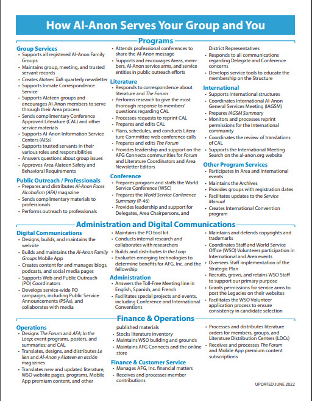

At our recent Area Meeting, the Chair posed these three questions for us to consider:
What are the top 3 priorities for the Area?
How should districts be organized?
What service positions are you willing and able to contribute?
Please read the Structure of the Al-Anon/Alateen Fellowship (Links of Service) section in our Al-Anon / Ala-Teen Service Manual , pp. 63-67, for information about service positions.
Greetings Al-Anon and Alateen members,
Another appeal letter?! Yes, this is the third quarterly appeal letter this year. However, you are not imagining the fact that your group just received an appeal letter! That’s because we recently sent out a special appeal letter as the World Service Office (WSO) has a deficit budget for 2022 and, through April, we were not meeting our contributions and literature sales goals. In May, we shared how Lois and Anne requested a $1 contribution from each group member twice per year. It was revealed at the World Service Conference (WSC) in April that $1 in 1951 is valued at over $10 today.
This appeal letter is for individual members to provide support directly to the WSO, so the WSO can continue to serve all the groups. Keeping our group records up to date, providing Conference Approved Literature (CAL) for our meetings, and reaching out to professionals via public service announcements (PSAs) or our public outreach magazine Al-Anon Faces Alcoholism are a few ways the WSO supports the groups. (See the back of this letter for a complete list of services.)
Thank you for your continued, consistent support! In reference to our 2022 WSC theme, “Enhancing Our Recovery through Abundance, Unity, and Understanding,” we are grateful for your “Understanding” of how your contributions provide “Unity” through an “Abundance” of resources, in support of our primary purpose of helping families and friends of alcoholics! “Together We Can Make It!”
In gratitude,
AFG, Inc. Treasurer treasurer@al-anon.org

(reproduced here with the kind permission of our Area Delegate)
Dear friends,
We are so grateful to all of you! It has been a while! Please know that we have been patiently waiting to write to all of you and show you our immense gratitude! So much has happened since our last assembly, and so much that we are eager to share with you. First and foremost, we want to assure you that we have carried all of you in our hearts. We thank you for the honor and privilege to be your trusted servants.
As your delegate, I had the privilege and honor to be present when the World Service Conference voted on the historical event to include The Global Electronic Area in this year’s 62nd World Service Conference. I would love to convey, that the WSO, and WSC, are extremely excited and supportive of this historical moment in Al-Anon’s journey.
The officers of the newly formed area have been working diligently to create the structure that is merited for this historical moment. Your chairperson Rosemary B., Secretary Burt P., and treasurer Becky C.H., and I have been meeting regularly to learn how to serve you best.
We will be announcing the dates for our very first assembly soon! As with the theme of this year’s Conference; we are Enhancing Our Recovery Through Abundance, Unity, And Understanding! I hope you all feel our excitement and share in this wonderful festive time in the history of Al-Anon. It is truly a monumental moment worthy of much celebration.
Come celebrate with us at our first assembly and know all that is in store for your Global Electronic Area.
With love in fellowship,
Ozzie A,
Global Electronic Area Panel 62
For contributions to the Global Electronic Area
Mail checks and paid to:
Or send through
Zelle
Recipient name: GLOBAL ELECTRONIC AREA GEA
email: geatreasurer22@gmail.com
| In fellowship, |
| Ozzie A. |
| ” I used to believe thinking was the highest function of human beings… I now realize loving is our supreme function. The heart precedes the mind. ” |
| Lois W. |
Queridos amigos,
¡Estamos muy agradecidos con todos ustedes! ¡Que ha sido un tiempo! ¡Sepa que hemos estado esperando pacientemente para escribirles a todos y mostrarles nuestra inmensa gratitud! Han pasado tantas cosas desde nuestra última asamblea, y tanto que estamos ansiosos por compartir con ustedes. Ante todo, queremos aseguraros que os hemos llevado a todos en el corazón. Les agradecemos el honor y el privilegio de ser sus servidores de confianza.
Como su delegado, tuve el privilegio y el honor de estar presente cuando la Conferencia de Servicio Mundial votó sobre el evento histórico para incluir el Área Electrónica Global en la 62ª Conferencia de Servicio Mundial de este año. Me encantaría transmitir que la OSM y la CSM están sumamente emocionadas y apoyan este momento histórico en el viaje de Al‑Anon.
Los oficiales del área recién formada han estado trabajando diligentemente para crear la estructura que merece este momento histórico. Su presidenta Rosemary B., el secretario Burt P., y la tesorera Becky C.H. y yo nos hemos reunido regularmente para aprender cómo servirles mejor.
¡Pronto anunciaremos las fechas de nuestra primera asamblea! Al igual que con el tema de la Conferencia de este año; ¡Estamos mejorando nuestra recuperación a través de la abundancia, la unidad y la comprensión! Espero que todos sientan nuestra emoción y compartan este maravilloso tiempo festivo en la historia de Al-Anon. Es verdaderamente un momento monumental digno de mucha celebración.
Ven a celebrar con nosotros nuestra primera asamblea y conoce todo lo que le espera a tu Área Electrónica Global.
Con amor en compañerismo,
Ozzie A.
Panel de Área Electrónica Global 62
Para Contribuciones al Área Electrónica Global
Zelle
Al nombre de: GLOBAL ELECTRONIC AREA GEA
email: geatreasurer22@gmail.com
Chers amis,
Nous vous sommes tous très reconnaissants! Cela fait longtemps! Sachez que nous attendons patiemment de vous écrire à tous et de vous témoigner notre immense gratitude! Tant de choses se sont passées depuis notre dernière assemblée, et tant de choses que nous sommes impatients de partager avec vous. Avant tout, nous tenons à vous assurer que nous vous portons tous dans nos cœurs. Nous vous remercions pour l’honneur et le privilège d’être vos serviteurs de confiance.
En tant que votre délégué, j’ai eu le privilège et l’honneur d’être présent lorsque la Conférence des services mondiaux a voté sur l’événement historique pour inclure l’espace électronique mondial dans la 62e Conférence des services mondiaux de cette année. J’aimerais transmettre que le BSM et la CSM sont extrêmement enthousiastes et soutiennent ce moment historique du parcours d’Al-Anon.
Les officiers de la zone nouvellement formée ont travaillé avec diligence pour créer la structure qui est méritée pour ce moment historique. Votre présidente Rosemary B., le secrétaire Burt P. et la trésorière Becky C.H. et moi-même nous rencontrons régulièrement pour apprendre comment mieux vous servir.
Nous vous annoncerons bientôt les dates de notre toute première assemblée ! Comme pour le thème de la Conférence de cette année; nous améliorons notre rétablissement par l’abondance, l’unité et la compréhension ! J’espère que vous ressentez tous notre enthousiasme et que vous partagez ce merveilleux moment festif de l’histoire d’Al-Anon. C’est vraiment un moment monumental digne de beaucoup de célébrations.
Venez célébrer avec nous lors de notre première assemblée et sachez tout ce qui vous attend pour votre espace électronique mondial.
Avec amour en communion,
Ozzie A.
Panneau de zone électronique mondiale 62
Pour les contribucion à l’espace électronique mondial
Zelle
Au nom de: GLOBAL ELECTRONIC AREA GEA
email: geatreasurer22@gmail.com